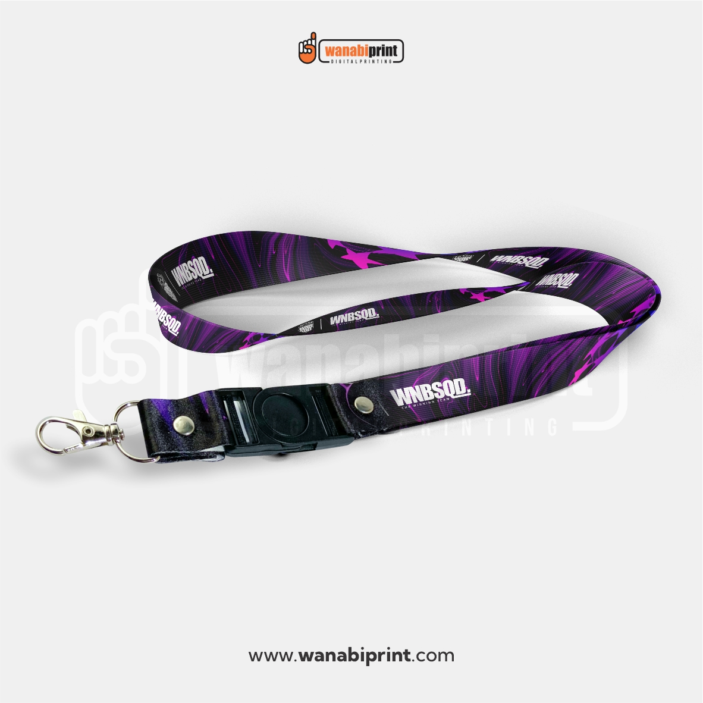
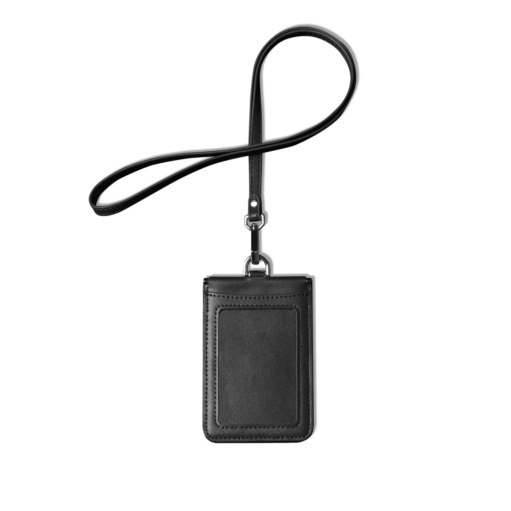
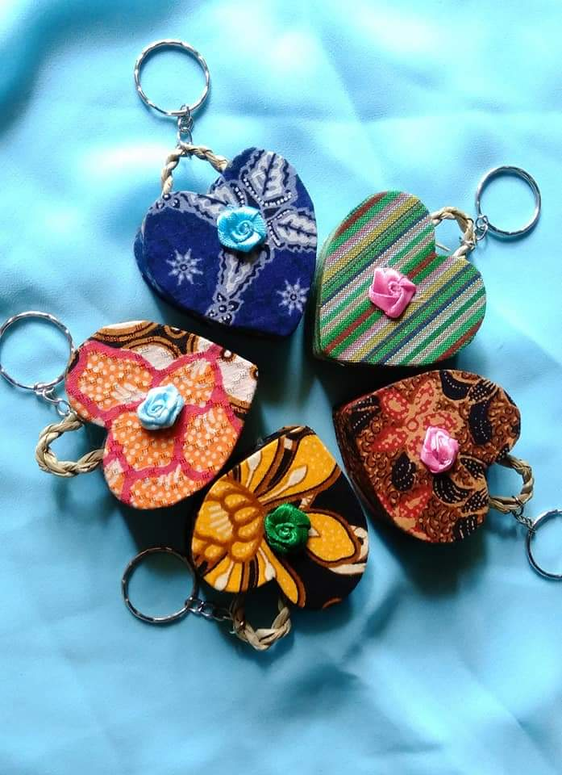

Lanyard ramah lingkungan yang dibuat dari kain perca melalui proses upcycling.

Card holder sederhana yang dapat digunakan bersama lanyard untuk kebutuhan identitas.

Aksesoris kecil dari sisa kain perca yang lebih kecil sehingga tidak terbuang.
Menggantikan bahan polyester pada lanyard dengan kain perca yang merupakan sisa produksi tekstil sehingga lebih ramah lingkungan.
Menggabungkan lanyard dengan card holder dalam satu paket produk sehingga lebih praktis digunakan oleh pelajar, mahasiswa, maupun pekerja.
Menyesuaikan desain produk agar dapat digunakan dalam berbagai kebutuhan, serta menyediakan opsi custom nama atau desain tertentu.
Menambahkan QR Code pada produk yang mengarah ke website Percava untuk memberikan edukasi mengenai pemanfaatan kain perca.
Sisa kain perca yang lebih kecil dimanfaatkan kembali menjadi aksesoris lain seperti gantungan kunci atau produk kreatif lainnya.
Mengurangi penggunaan bahan baru serta menekan limbah tekstil dengan memanfaatkan kembali potongan kain yang masih layak digunakan.